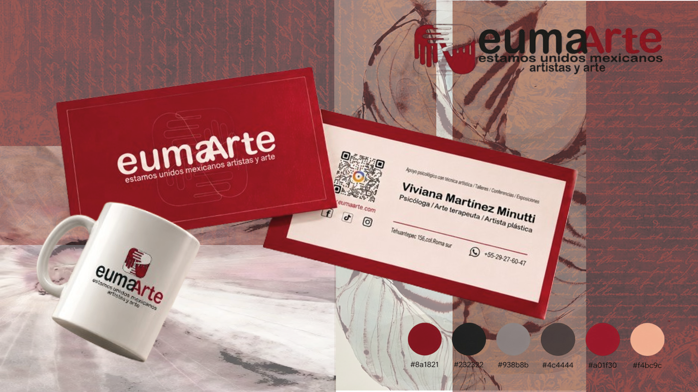
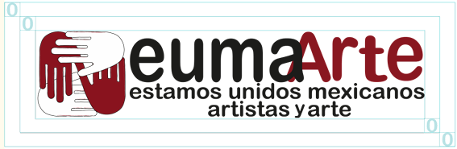
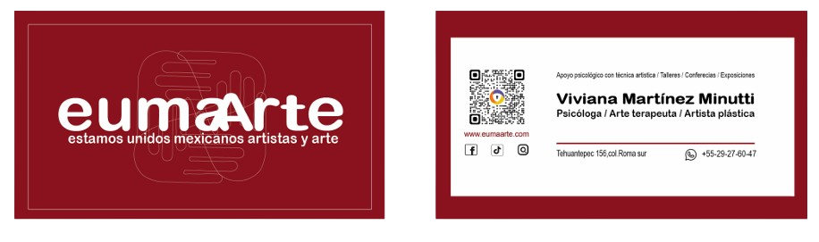
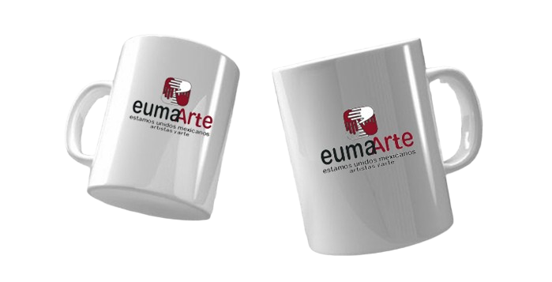
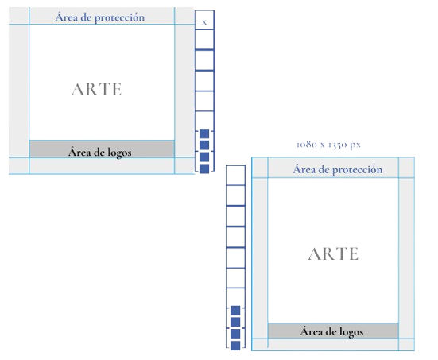

EUMAARTE
BRANDING · IDENTIDAD VISUAL · DISEÑO GRÁFICO
Rediseño de identidad visual para Eumaarte, una iniciativa que reúne a artistas mexicanos y busca promover su trabajo a través de talleres, conferencias y exposiciones.

IDENTIDAD QUE CONECTA
El proyecto consistió en rediseñar su identidad visual y desarrollar aplicaciones gráficas que ayudaran a comunicar una imagen coherente y reconocible.
EVOLUCIÓN DE LA MARCA
El rediseño de Eumaarte buscó renovar su identidad visual, manteniendo su relación con el arte y la comunidad artística mexicana.
CONSTRUCCIÓN DEL IMAGOTIPO
La retícula de construcción establece las proporciones y la organización visual del imagotipo, manteniendo una composición equilibrada y coherente en sus aplicaciones.

PALETA CROMÁTICA
La paleta cromática combina tonos cálidos, neutros y contrastantes para construir una identidad visual versátil y reconocible.
SISTEMA TIPOGRÁFICO
La identidad visual combina familias tipográficas para establecer jerarquías claras y mantener la legibilidad.
Aa Bb Cc
ABCDEFGHIJKLMNÑOPQRSTUVWXYZ
abcdefghijklmnñopqrstuvwxyz
0123456789
Aa Bb Cc
ABCDEFGHIJKLMNÑOPQRSTUVWXYZ
abcdefghijklmnñopqrstuvwxyz
0123456789
APLICACIONES GRÁFICAS
Se adapta a diferentes soportes físicos y digitales, manteniendo una comunicación gráfica consistente y reconocible.

01 / PAPELERÍA CORPORATIVA
02 / MERCHANDISING
03 / DISEÑO PARA REDES SOCIALESEXPLORA EL MANUAL
Descubre el desarrollo completo de la identidad gráfica de Eumaarte:
VER MANUAL COMPLETO ↗